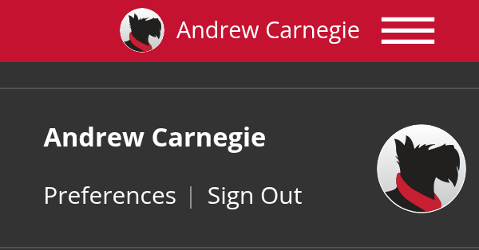
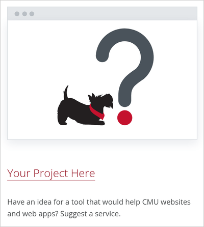
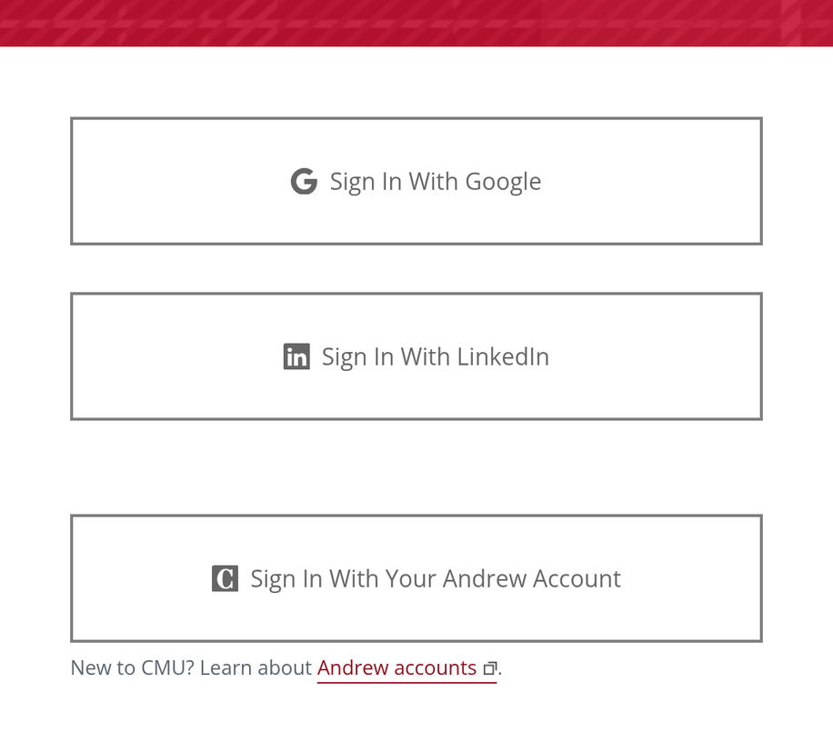

Images and Icons
Unlike placeholder photos, these images are ready for live sites and apps. Link to them from your pages; the addresses won't change.
Bio Placeholder
CMU's gray wordmark placeholder for a person without a photo on their bio page, as on the Web Strategy team page. Staff pages use it at 600 × 750. If CMU's placeholder changes, this address follows it.
https://placemellon.andrew.cmu.edu/600/750?bioExample
People List Placeholder
Scotty for a person without a photo in a people list, at the list's 64 × 64. If the placeholder for lists changes, this address follows it.
https://placemellon.andrew.cmu.edu/64?bio=listExample
Default Profile Picture
Scotty as the signed-in user's picture when they don't have a photo, in the kit's profile picture: small in the roof and larger in the menu. Use the address for each spot, so its white ring stays visible at that size.
Roof
https://placemellon.andrew.cmu.edu/28?profileMenu
https://placemellon.andrew.cmu.edu/56?profileExample

Question Mark
Scotty and a question mark, for something still to come, like a project, a speaker or a prize not announced yet. Scotty Recumbent challenges its dot to play; Scotty Rampant stands up as its dot. Any size works for either.
Scotty Recumbent
https://placemellon.andrew.cmu.edu/1040/656?scotty=recumbent&questionScotty Rampant
https://placemellon.andrew.cmu.edu/1040/656?scotty=rampant&question
Example

Sample ID Card
A sample CMU ID for Andrew Carnegie, for ID tap screens and mockups. It's the card in the kit's ID tap.
https://placemellon.andrew.cmu.edu/images/cmu-id-card.svgExample
Sign-In Icon
CMU's icon for Andrew account sign-in buttons, to match Google's and LinkedIn's
marks. Use its SVG code instead of an <img> in the button, so
it takes the text color. See the Carnegie Mellon Web Kilt's
Sign-In Page.
SVG code for the button:
<svg class="cmu-sign-in-mark" viewBox="0 0 608 608" aria-hidden="true" focusable="false"><rect width="608" height="608" rx="48" fill="currentColor" /><path transform="translate(36.48,36.48) scale(0.88) translate(0.000000,608.000000) scale(0.100000,-0.100000)" fill="#fff" stroke="#fff" stroke-width="260" stroke-linejoin="round" d="M3110 5469 c-120 -7 -296 -33 -355 -53 -22 -8 -58 -18 -80 -24 -99 -25 -274 -99 -370 -157 -22 -13 -47 -28 -55 -32 -142 -74 -375 -278 -548 -480 -53 -62 -70 -85 -149 -203 -24 -36 -49 -73 -56 -83 -18 -26 -75 -128 -88 -157 -6 -14 -15 -32 -20 -40 -5 -8 -14 -26 -20 -40 -6 -14 -15 -32 -20 -40 -5 -8 -12 -22 -15 -30 -80 -192 -110 -271 -126 -335 -6 -22 -17 -56 -25 -75 -7 -19 -17 -57 -22 -85 -5 -27 -16 -79 -24 -115 -18 -76 -34 -172 -48 -290 -13 -102 -5 -587 10 -645 6 -22 16 -78 22 -125 6 -47 16 -93 21 -103 5 -10 14 -45 19 -79 5 -33 16 -73 24 -89 8 -15 15 -38 15 -51 0 -13 9 -40 20 -61 11 -20 20 -45 20 -55 0 -9 9 -34 20 -55 11 -20 20 -42 20 -47 0 -18 157 -327 182 -358 7 -9 19 -28 27 -42 95 -173 451 -542 578 -599 11 -5 24 -15 28 -21 4 -6 17 -16 28 -21 12 -6 40 -21 62 -34 36 -22 121 -64 200 -101 42 -19 113 -44 160 -56 22 -6 55 -16 73 -24 18 -8 51 -16 75 -20 23 -3 74 -13 112 -22 104 -25 595 -24 674 1 30 9 67 17 83 17 16 0 54 9 85 20 32 11 66 20 78 20 11 0 34 7 50 16 17 9 44 20 60 24 44 12 145 56 158 69 6 6 18 11 27 11 8 0 27 8 40 17 68 48 277 144 326 149 100 12 169 -35 224 -153 18 -38 35 -75 39 -83 5 -8 24 -19 44 -24 72 -18 67 -74 67 809 0 881 5 823 -67 812 -44 -8 -53 -19 -53 -73 0 -22 -7 -63 -15 -90 -8 -27 -18 -76 -21 -109 -4 -33 -12 -71 -19 -85 -7 -14 -18 -49 -24 -78 -6 -30 -18 -63 -26 -75 -8 -12 -15 -30 -15 -40 0 -10 -9 -36 -20 -58 -11 -21 -29 -57 -40 -78 -11 -22 -20 -46 -20 -54 0 -8 -9 -22 -20 -32 -11 -10 -20 -24 -20 -31 0 -8 -18 -40 -40 -71 -22 -32 -40 -62 -40 -66 0 -4 -44 -63 -99 -130 -89 -111 -214 -237 -259 -261 -9 -5 -35 -23 -57 -40 -44 -35 -63 -46 -120 -76 -22 -11 -47 -24 -55 -28 -54 -32 -171 -76 -230 -89 -14 -2 -67 -13 -117 -24 -97 -20 -230 -24 -298 -10 -22 5 -67 14 -100 20 -54 10 -136 39 -175 62 -8 5 -32 18 -53 29 -51 28 -180 151 -216 209 -17 25 -35 52 -41 58 -17 20 -95 183 -117 243 -46 128 -55 158 -64 205 -6 28 -16 68 -24 90 -8 22 -17 67 -20 99 -4 33 -11 70 -16 84 -5 13 -16 86 -24 163 -8 77 -17 144 -20 150 -12 18 -35 612 -35 884 0 285 24 802 40 870 5 22 12 76 15 120 4 44 13 106 21 138 8 32 19 86 24 120 9 63 34 168 52 222 6 17 17 53 24 80 8 28 21 64 29 82 8 17 15 36 15 43 0 6 8 28 19 48 10 20 29 60 42 87 42 89 150 244 207 296 63 57 109 89 197 136 64 34 133 54 237 68 108 15 126 15 235 0 155 -22 245 -55 403 -146 87 -51 233 -173 323 -271 45 -49 86 -97 91 -106 5 -9 26 -37 46 -62 20 -25 50 -67 66 -93 16 -26 39 -64 51 -85 13 -20 32 -55 43 -77 11 -22 25 -47 30 -55 6 -8 14 -26 20 -40 5 -14 14 -32 18 -40 24 -42 61 -134 89 -220 8 -25 21 -60 29 -78 8 -18 14 -41 14 -51 0 -10 9 -44 20 -76 11 -32 20 -75 20 -95 0 -49 18 -70 67 -77 35 -5 45 -2 67 21 l26 25 -2 740 -3 740 -22 23 c-49 49 -133 16 -133 -53 0 -17 -12 -42 -30 -63 -40 -45 -148 -74 -213 -58 -23 6 -65 16 -92 21 -28 5 -64 17 -80 25 -17 9 -36 16 -42 16 -12 0 -38 11 -149 61 -23 11 -47 19 -53 19 -7 0 -29 9 -49 19 -59 30 -172 74 -254 96 -25 8 -55 18 -65 23 -10 6 -40 13 -68 17 -27 4 -75 13 -105 20 -70 18 -158 22 -290 14z" /></svg>Show the Full SVGHide the Full SVG
Address to download the file:
https://placemellon.andrew.cmu.edu/images/cmu-sign-in-icon.svgExample

Favicon
Favicon Links
CMU's icon for browser tabs, bookmarks and phone home screens comes from cmu.edu.
Add these links to your page's head, or start from the Carnegie Mellon Web Kilt's page template, which already has them:
<link href="https://www.cmu.edu/favicon.ico" rel="icon">
<link href="https://www.cmu.edu/favicon-152.png" rel="apple-touch-icon-precomposed">
<meta content="#9f0000" name="msapplication-TileColor">
<meta content="https://www.cmu.edu/favicon-144.png" name="msapplication-TileImage">Example
Browser Tab
 Phone Home Screen
Phone Home Screen
SVG Icon
For an avatar or a slide at any size:
<svg xmlns="http://www.w3.org/2000/svg" viewBox="0 0 608 608" width="608" height="608"><title>Carnegie Mellon University icon</title><rect width="608" height="608" fill="#9f0000"/><path transform="translate(0.000000,608.000000) scale(0.100000,-0.100000)" fill="#fff" d="M3110 5469 c-120 -7 -296 -33 -355 -53 -22 -8 -58 -18 -80 -24 -99 -25 -274 -99 -370 -157 -22 -13 -47 -28 -55 -32 -142 -74 -375 -278 -548 -480 -53 -62 -70 -85 -149 -203 -24 -36 -49 -73 -56 -83 -18 -26 -75 -128 -88 -157 -6 -14 -15 -32 -20 -40 -5 -8 -14 -26 -20 -40 -6 -14 -15 -32 -20 -40 -5 -8 -12 -22 -15 -30 -80 -192 -110 -271 -126 -335 -6 -22 -17 -56 -25 -75 -7 -19 -17 -57 -22 -85 -5 -27 -16 -79 -24 -115 -18 -76 -34 -172 -48 -290 -13 -102 -5 -587 10 -645 6 -22 16 -78 22 -125 6 -47 16 -93 21 -103 5 -10 14 -45 19 -79 5 -33 16 -73 24 -89 8 -15 15 -38 15 -51 0 -13 9 -40 20 -61 11 -20 20 -45 20 -55 0 -9 9 -34 20 -55 11 -20 20 -42 20 -47 0 -18 157 -327 182 -358 7 -9 19 -28 27 -42 95 -173 451 -542 578 -599 11 -5 24 -15 28 -21 4 -6 17 -16 28 -21 12 -6 40 -21 62 -34 36 -22 121 -64 200 -101 42 -19 113 -44 160 -56 22 -6 55 -16 73 -24 18 -8 51 -16 75 -20 23 -3 74 -13 112 -22 104 -25 595 -24 674 1 30 9 67 17 83 17 16 0 54 9 85 20 32 11 66 20 78 20 11 0 34 7 50 16 17 9 44 20 60 24 44 12 145 56 158 69 6 6 18 11 27 11 8 0 27 8 40 17 68 48 277 144 326 149 100 12 169 -35 224 -153 18 -38 35 -75 39 -83 5 -8 24 -19 44 -24 72 -18 67 -74 67 809 0 881 5 823 -67 812 -44 -8 -53 -19 -53 -73 0 -22 -7 -63 -15 -90 -8 -27 -18 -76 -21 -109 -4 -33 -12 -71 -19 -85 -7 -14 -18 -49 -24 -78 -6 -30 -18 -63 -26 -75 -8 -12 -15 -30 -15 -40 0 -10 -9 -36 -20 -58 -11 -21 -29 -57 -40 -78 -11 -22 -20 -46 -20 -54 0 -8 -9 -22 -20 -32 -11 -10 -20 -24 -20 -31 0 -8 -18 -40 -40 -71 -22 -32 -40 -62 -40 -66 0 -4 -44 -63 -99 -130 -89 -111 -214 -237 -259 -261 -9 -5 -35 -23 -57 -40 -44 -35 -63 -46 -120 -76 -22 -11 -47 -24 -55 -28 -54 -32 -171 -76 -230 -89 -14 -2 -67 -13 -117 -24 -97 -20 -230 -24 -298 -10 -22 5 -67 14 -100 20 -54 10 -136 39 -175 62 -8 5 -32 18 -53 29 -51 28 -180 151 -216 209 -17 25 -35 52 -41 58 -17 20 -95 183 -117 243 -46 128 -55 158 -64 205 -6 28 -16 68 -24 90 -8 22 -17 67 -20 99 -4 33 -11 70 -16 84 -5 13 -16 86 -24 163 -8 77 -17 144 -20 150 -12 18 -35 612 -35 884 0 285 24 802 40 870 5 22 12 76 15 120 4 44 13 106 21 138 8 32 19 86 24 120 9 63 34 168 52 222 6 17 17 53 24 80 8 28 21 64 29 82 8 17 15 36 15 43 0 6 8 28 19 48 10 20 29 60 42 87 42 89 150 244 207 296 63 57 109 89 197 136 64 34 133 54 237 68 108 15 126 15 235 0 155 -22 245 -55 403 -146 87 -51 233 -173 323 -271 45 -49 86 -97 91 -106 5 -9 26 -37 46 -62 20 -25 50 -67 66 -93 16 -26 39 -64 51 -85 13 -20 32 -55 43 -77 11 -22 25 -47 30 -55 6 -8 14 -26 20 -40 5 -14 14 -32 18 -40 24 -42 61 -134 89 -220 8 -25 21 -60 29 -78 8 -18 14 -41 14 -51 0 -10 9 -44 20 -76 11 -32 20 -75 20 -95 0 -49 18 -70 67 -77 35 -5 45 -2 67 21 l26 25 -2 740 -3 740 -22 23 c-49 49 -133 16 -133 -53 0 -17 -12 -42 -30 -63 -40 -45 -148 -74 -213 -58 -23 6 -65 16 -92 21 -28 5 -64 17 -80 25 -17 9 -36 16 -42 16 -12 0 -38 11 -149 61 -23 11 -47 19 -53 19 -7 0 -29 9 -49 19 -59 30 -172 74 -254 96 -25 8 -55 18 -65 23 -10 6 -40 13 -68 17 -27 4 -75 13 -105 20 -70 18 -158 22 -290 14z"/></svg>Show the Full SVGHide the Full SVG
Address to download the file:
https://placemellon.andrew.cmu.edu/images/cmu-icon.svgExample
Official Marks and Artwork
CMU's brand site has the official wordmarks, Scotty illustrations and tartan patterns, with how to use them: